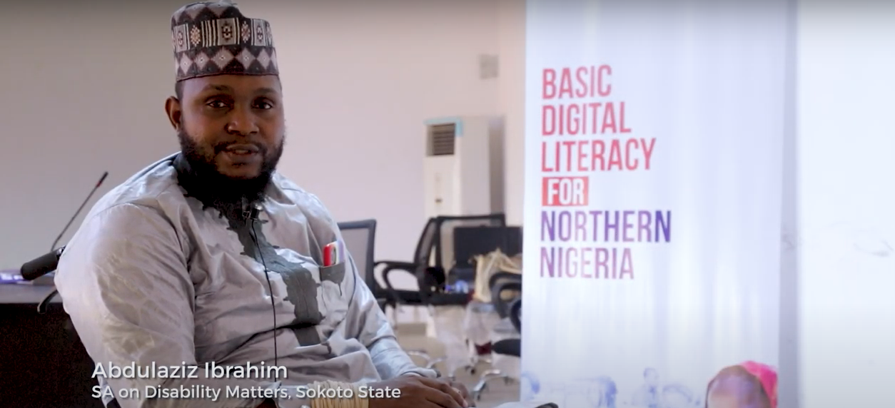

USING TECHNOLOGY TO ADVANCE SUSTAINABLE HUMAN CAPITAL DEVELOPMENT IN AFRICA.
We are a non-profit social enterprise that creates access to decent work and entrepreneurship opportunities and platforms for Africans through digital skills empowerment and advocacy.
Our overall vision is to scale access to sustainable tech careers for young Africans and marginalized groups, transforming how talent connects with opportunity – ensuring Africans achieve economic prosperity.
To create opportunities and platforms for Africans to access decent work and entrepreneurship through digital skills empowerment and advocacy
WE ARE MAKING A DIFFERENCE
190,818
Direct beneficiaries of
Tech4Dev’s programmes
Through Skilling – 64,313
Through Advocacy – 126,570
896,930
Indirect beneficiaries of
Tech4Dev’s programmes
Extensive reach 9.2 million
0
cities
reached
0
Beneficiaries facilitated
to suitable jobs
0
African countries reached:
Nigeria, Ethiopia, DR Congo, Tanzania, Uganda, Algeria...+16 more
According to the International Finance Corporation (IFC), about 230 million jobs in Sub-Saharan Africa will require digital skills by 2030. This figure is due to increasing use of technology and automation of jobs. At Tech4Dev, we prepare people for the future of work by creating opportunities for decent work through technology-based training, which include coding skills, deep tech skills, employability skills and basic digital skills
OUR PROGRAMS
Women Techsters
The Women Techsters initiative is aimed at bridging the digital and technology knowledge divide between men and women as well as ensuring equal access to opportunities for all. We are empowering girls and women across Africa with varying degrees of digital, deep tech and soft skills required within the technology ecosystem.
The Women Techsters Initiative will train 5 million across Africa by 2030.
The Emerging Market model will train 36,000 youth over a 1-year period in through a blended learning approach: online and physical through skill training and youth centres across Nigeria. This would be achieved through multi-year collaboration with four strategic Federal Government Ministries and 12 state governments.
The BDL-SN is designed to reach 1000 beneficiaries, in 10 rural clusters, across 10 states in Southern Nigeria, targeting 50% vulnerable women and girls, 30% People Living with Disability (PLWD) e.g mobility, speech, polio, etc, and 20% for other vulnerable groups.
The training will be implemented across the following Southern States: Ekiti, Oyo, Akwa-Ibom, Delta, Edo, River, Ogun, Abia, Enugu, Anambra
The #DigitalforAllChallenge is a free digital skilling program and competition designed to drive digital literacy of youth across Nigeria and spur interest in acquiring digital skills and certifications via onsite and online platforms. It is aimed at equipping men and women between the ages of 16 – 45 years
with digital skills as a means of enabling equal access to technology centric economic opportunities. It is a sub-program under Microsoft’s Emerging Market Model Initiative, implemented in Nigeria by Technology for Social Change and Development Initiative (Tech4Dev).
The NDIP is a program that focuses on delivering both basic and advanced digital skills to government employees and youths.
The NDIP is designed as a sustainability component of the Government where employees who benefit and are certified from the training are expected to deliver the same training to their colleagues via a structured training session or work interaction.
Women Techsters UN Solutions Summit 2019 - Full solution presentation

Basic Digital Literacy
Women Techsters Alumni: Fatima Ahmed (From A Chemist to a Woman in Tech)
TESTIMONIALS
I emerged as the overall winner from the intermediate level during the grand finale of the first
edition of the Digital for all Challenge. Being a part of the challenge was a great learning
experience for me, it gave me the foundation to build my knowledge and skills. The training
experience was exciting and educational. The curriculum was perfect and beginner friendly. I
presently work as an associate Product Manager at Lendsqr where I am using the skills I learnt
during the program to build great products driven by AI. The trainers did an excellent job preparing
us for the world of opportunities.
Digital for all Challenge 1.0
Data Science & Artificial Intelligence
I saw the flyer for #Digitalforallchallenge on a friend's status and applied. Learning was effortless
because the facilitator simplified everything. I had a good time working with people from other
tracks in the Capstone project, and it made the whole training memorable and different from all
other training courses I have attended in the past. I learned excellent skills like HTML, CSS,
Javascript, Bootstrap, ReactJS, C#, ASP.NET, and GIT. I had such a lovely learning experience. I
am using the skills learnt during the training in my role at Interswitch.
Digital for all Challenge 1.0
Software Development
My name is Ifechi Mafiana and I reside in Abuja. Earlier this year, I came across information about Tech4Dev and the Microsoft Nigeria voucher certification program through a Twitter post. Being a passionate data analyst, I recognized that achieving the Microsoft Power BI Data Analyst Associate certificate would be a strong way to showcase my recently acquired skills, especially since I had already begun creating models with Power BI.
The driving force behind my journey into the realm of data analysis has been the compelling aspiration to unearth game-changing insights and discern significant trends from data
I come from a family where education wasn't valued, but my mother's love for education inspired me, and I strived to make a difference despite the challenges I faced in school and then unemployment. The experience in the Women Techsters Fellowship has been a steppingstone to my success. I obtained my first global certificate (Certified in Cybersecurity) in October 2022, two months after the training started. Tech4Dev has given me the courage, knowledge, and skills to pass my Certified in Cybersecurity exam, and ace interviews.
My name is Daniel Okhifo, and I reside in Lagos state, Nigeria. I studied Computer Information Systems at Babcock University, and afterwards, I decided to pursue a career in Data Analysis. Currently, my goal is to become a Data Analyst in sports. I learned about Tech4Dev through a work colleague, and I applied for the Digital Skills Nigeria program because it offered me an opportunity to grow and learn. The experience was smooth and highly beneficial
Growing up, I noticed a trend of teenage pregnancies in my family and how this trend affected my father’s stance on investing in a girl’s education. Even though he provided me with the best he could, I could feel his fear that I might slip into the trend. This, however, only fueled my determination to stand out.
Right after my first degree, I wanted to pursue an MSc. in Data Science but could not afford it. All the other opportunities I saw were equally expensive. Then I found the Women Techsters Fellowship and the rest is history. The training has prepared me for the world through both hard skills and soft skills. I have been given some knowledge in areas of Data Science that people are paying thousands for. The incorporation of soft skills into the training gives it a 5-star rating.
As a Mass Communication graduate, I’ve always been passionate about tech but didn't consider taking it as a career until after my NYSC with no job, which got me thinking about how to improve myself and my earning power.
The Women Techsters Fellowship training has been instrumental in propelling my career forward. The training has equipped me with invaluable skills and knowledge, enabling me to excel in my career. I kicked off my career with an internship placement by Tech4Dev, and I was retained full-time. During the training, I was able to familiarize myself with Design Thinking, UX Research, Interaction Design, Prototyping, User Experience (UX), Figma, etc. The soft skills training was one of my highlights from the training.
For the longest time, one of my goals has been to find a way to merge epidemiology, biostatistics, and computer technologies to solve health problems using data-driven decisions. In exploring various options to do this, I pursued a career in Data Science while sourcing for scholarship and internship opportunities in health data analysis or epidemiology and biostatistics to do my Ph.D.
I applied for the Bootcamp, and then after the duration of the Bootcamp, I applied for the Fellowship because I wanted more in-depth training and because the focus areas and objectives matched my interest. I got admitted to the Data Science learning track after a rigorous screening process. I faced many challenges during the training because my town became a warzone, and my family and I had to move to an IDP camp, and I could only take my phone.
I initially came across the advertisement of the Women Techsters Fellowship on Twitter. At the time, I felt a bit stuck in my quest to advance my tech skills and further my knowledge. With a sense of optimism, I decided to apply and was pleasantly surprised when I received an acceptance. I was genuinely excited, as I had doubts about being accepted given my lack of software development skills.
Participation in the Women Techsters Fellowship program sharpened my hard work, it has opened my eyes beyond South Africa and expanded my technical skills. It created the foundation for me to learn Software Development and I have learned a lot and even created a few landing pages.
In 2020, I decided to transition into tech after being inspired by a design I saw online. I faced several challenges along my tech journey, especially since I started learning on my own. Overcoming these challenges became easier when I joined the Women Techsters Bootcamp and found helpful resources on YouTube.
The Women Techsters Bootcamp training program was both fun and enriching, and it has significantly contributed to my career growth. The training with Tech4Dev helped me understand various design principles that I wouldn’t have known about through self-learning. Among other things, I particularly enjoyed working on personal projects and the group project. It was a truly enjoyable experience.
I transitioned from Graphics Design to Product Design, which took me a year and included several online courses, and then participating in the Women Techsters Fellowship program. During the Women Techsters Fellowship training, I worked on various projects, including an app for walking that I worked on with my team members. I also created an app that connects vets with animal lovers who would love to adopt pets. Despite my interest in making designs look good, my supervisor helped me understand that the product must be a usable product for the users. Although I had to work on the hardest part of transitioning, making functional products instead of just making designs look good.
Shimaa Mohammed
(Egypt)
WT-Product Design
My first encounter with the Women Techsters program was in 2021 when I applied for the first cohort of the Fellowship but unfortunately, I didn’t get in. I didn’t let this rejection discourage me from the strong desire I had to improve my Frontend skills and learn more about Frontend technologies and so, when the application for the second cohort of the Women Techsters Fellowship opened, I didn’t hesitate to apply and thankfully, I got in.
Jemima Chepyego
(Kenya)
WT-Software Development
I started my career in technology in 2018. I got into tech because I developed a passion for the Product Design field, especially concerning web 3.0 and Fintech. My tech journey has not been easy, but it has been an exciting journey.
Despite the challenges faced during the fellowship, I have recorded many proud moments in my Women Techsters Fellowship journey. One was being selected as one of the North African Representatives for Women Techsters. As a representative, I had the opportunity to work alongside other leaders in the Fellowship to positively impact the tech industry and help other women during the Fellowship. Another time, I was chosen as a project team leader to guide and assist my team during the learning process.
Reham Beltag
Egypt
WT-Product Design
I've always had a passion to fix things. In fact, I once taught myself how to repair a faulty socket—it was quite an interesting experience! Coming from a legal background, getting into the Women Techsters Fellowship, I made a firm commitment to fully embrace a career in technology. My motivation was fuelled by my insatiable thirst for knowledge and the authentic excitement I experienced whenever I immersed myself in learning. Through the training, I gained a profound understanding of the essence of the phrase "women supporting women." I encountered genuine and unwavering support from individuals who didn't even know my last name. Significantly, I don't believe I can narrate my tech journey without mentioning Tech4Dev. Without participating in this program, I would likely still be hesitating about my transition into the tech field.
Winnifred Imade Ogbeiwi
WT-Software Development
My name is Toluwanimi Abioye, and I'm currently a student at Obafemi Awolowo University Ile-Ife, majoring in physiotherapy. Alongside my academic pursuits, I have a deep love for product design.
I first learned about Tech4Dev through my brother, who introduced me to the Bootcamps in 2022. That experience was profound and left a lasting impression on me. Inspired by what I learned, I applied for the Women Techsters Fellowship program and was fortunate to be selected. It felt like a dream come true because it was the perfect opportunity for me to dive deeper into tech, especially coming from a background in Physiotherapy.
Toluwanimi Abioye
WT-Product Design
Nigeria
My experience with the Women Techsters program exceeded my expectations. From the moment I was accepted into the program, I was immersed in a dynamic learning environment. The curriculum was rigorous and hands-on, covering a wide range of topics in data science and AI.
What truly stood out during my time in the program was the sense of community and collaboration. I had the privilege of working alongside talented and passionate individuals from diverse backgrounds. We collaborated on tasks and projects. This collaborative spirit fostered innovation and creativity, and I formed lasting connections with fellow participants.
I am a single parent of two adorable twin girls in Lagos, Nigeria. Currently, I am pursuing my HND in Business Administration and Management at Yabatech, all while exploring the tech space for opportunities to fulfill my dream of becoming a successful businesswoman.
Eight years ago, at the age of 17, I became a mother right as I was about to reach the pinnacle of my academic journey. Despite facing societal discrimination due to teenage pregnancy, I exhibited immense resilience and strength to overcome the challenges thrown my way, including battling suicidal thoughts.
In my determination to provide for my daughters and prove my critics wrong, I made significant sacrifices, such as putting my education on hold to work and support my family. My dedication and brilliance in my O.N.D. program in Business Administration & Management earned me recommendations for a management job upon completion, which further boosted my income.
Christiana Balogun
WT-Product Management
Nigeria
Coming from a background in Sociology, I embarked on a career in Product Design in 2021 during my final year of studies in the university. Tech allows me to tap into my creative side and think outside the box. I applied for the Fellowship because I was searching for a well-structured organization where I could learn, grow, and be part of a community of young people who are also on a learning journey. Women Techsters program seemed like an excellent platform to achieve these goals, with the added possibility of securing an internship role after the training.
My experience was incredibly positive; I acquired valuable technical skills and improved my soft skills. I had the opportunity to collaborate with participants from different learning tracks, and I gained a deeper understanding of Product Design, which has proven beneficial in my current job as a Product Designer.
Peace Oluwaseun
WT-Product design
Nigeria
I obtained my first and second degrees in Philosophy from Lagos State University. I am driven by the belief that the future is technological, and I aspire to be a part of that innovative future. My goal is to contribute to the advancement of technology, making people’s lives easier by creating functional and enjoyable products.
The Women Techsters Fellowship program equipped me with the necessary skill set for a Product Management role. Through various activities such as mini-projects, breakout rooms, soft skill sessions, and a capstone project with presentations, I gained valuable knowledge and experience.


.jpg)


.jpeg)
.jpg)
.jpg)